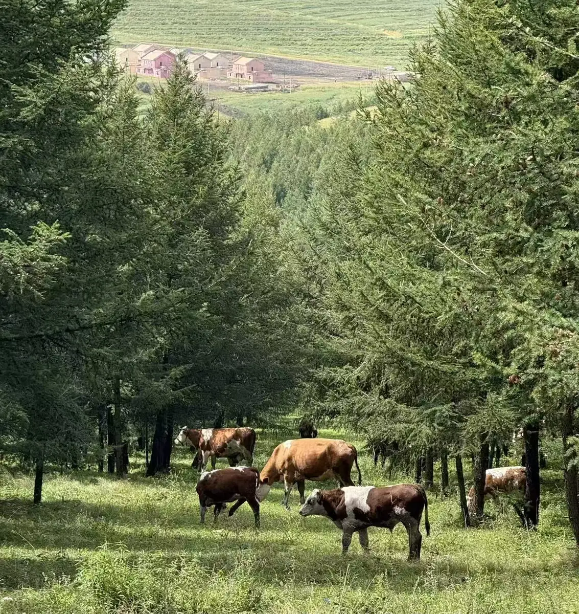
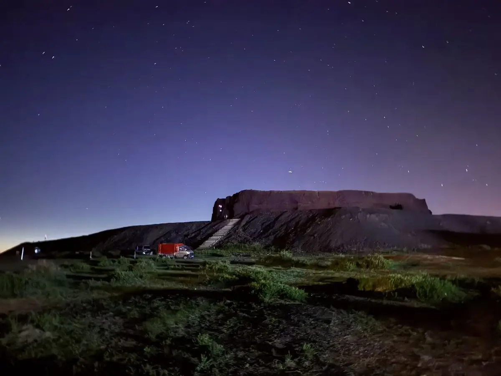
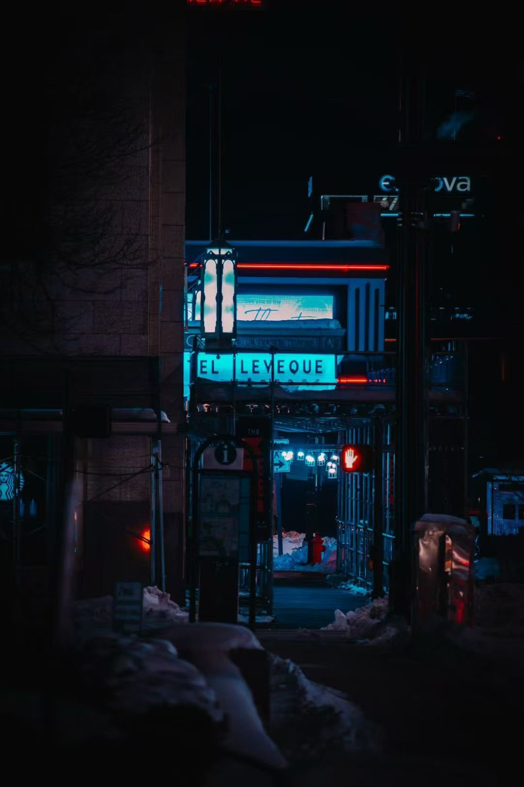

My Photography
A few moments I've captured from my travels and campus life.




Beyond the code: My hobbies, interests, and life.
I am Baowen Liu, an undergraduate at The Ohio State University majoring in Computer Science and Engineering with a Mathematics minor. I am passionate about building robust, scalable systems and solving complex engineering challenges, with hands-on experience spanning distributed backend architectures, full-stack development, and AI-powered platforms (RAG).
I am actively seeking Software Development Engineer (SDE) internship and full-time opportunities. Leveraging my background in the Java/Spring ecosystem, cloud-native AWS infrastructure, and modern data-driven systems, I look forward to contributing to high-impact products and collaborating with forward-thinking engineering teams.
A few moments I've captured from my travels and campus life.


